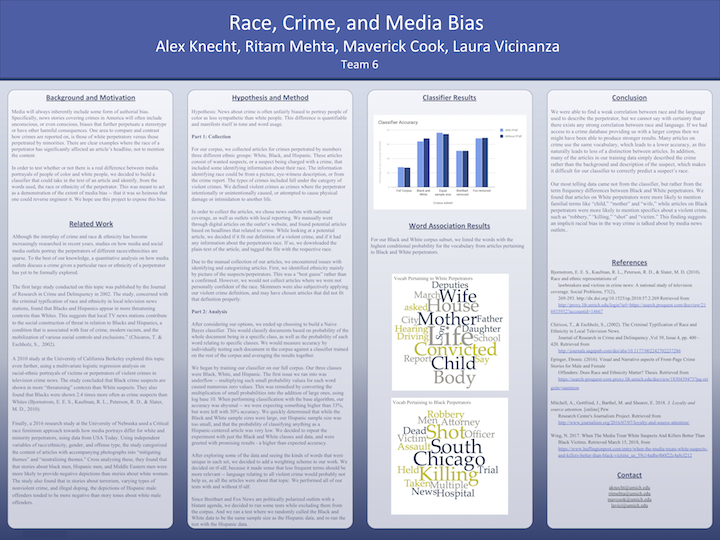

i (along with teammates maverick cook, alex knecht, and laura vicinanza) was curious as to how the media uses different language to write about crime based on the race of the suspect. there's a common narrative that news outlets intentionally or unintionally humanize white victims and paint people of color as more inherently violent. i decided to try to find some data to back that up. my team and i built a bayesain classification system in python with tf-idf weighting so that less frequent words would be prioritized.
i actually didn't expect that we would return any meaningful results, but the data was damning – common words unique to poc perpetrators did, in fact, serve to dehumanize them. pretty horrifying stuff.
this is an android app inspired by what timeful used to be: a smart scheduler. the app was built with react native and used google's machine learning api to find time in the user's google calendar and suggest free time to schedule events.
the app was conceived, designed, user tested, and refined. i had a hand in every step of the process – both the technical and the business side. the project was completed when the app was published onto the google play store.
over the course of three summers (and a little extra) with the nyc department of education's cs4all team, i've worn many hats: beloved intern, reviled intern, consultant-upon-whom-i-have-no-opinion, and one time, a baseball cap.
i've worked in a software engineering classroom in the bronx, supported staff at teacher training sessions, and helped to build the cs4all blueprint by fixing front and back end issues (writing apis with flask, writing jquery to fix the import of google docs, fixing css and html bugs). i recently helped to build upon luisa periera's intro to computational media curriculum. i was in charge of adding new units to the website, which is built with jekyll and is used in classrooms across nyc.
my friend kyle prue and i started an improv comedy podcast about the town we both lived in at the time: ann arbor, mi. in the vein of podcasts like "comedy bang bang" or "the teacher's lounge," we played characters and would interview improvisers in character each week. i was in charge of booking guests, editing, and publishing each episode. the podcast is currently approaching 2000 downloads. the website is built in jekyll and hosted on umich servers.
this is probably objectively my favorite thing i've ever done, just because of the sheer joy and fun involved in keeping the ever-more-riciculous continuity of this show straight.
seven mile coding is an organization that teaches computer science to students in detroit. we worked with community leaders at the mission city community center to teach cs every week: python, scratch, and arduino.
i was a founding member (along with maverick cook) and was in charge of lesson planning and curriculum development.
i built this as an inside joke with my school's improv group – it's a simple arcade style game built in p5.js.
the intention was to just build a fun thing to impress my non-coder friends. any trained monkey would have absolutely no trouble beating this game.
i was involved in organizing and hosting tedxuofm for three years. each year, the conference would have 8-12 speakers and 1400+ attendees.
i was the marketing lead in 2016-2017, and successfully sold the event out with a combination of online and physical marketing. i've also used my experience with tedx to coach speakers for a women in cs event at which faculty and students presented their research to a broad audience.